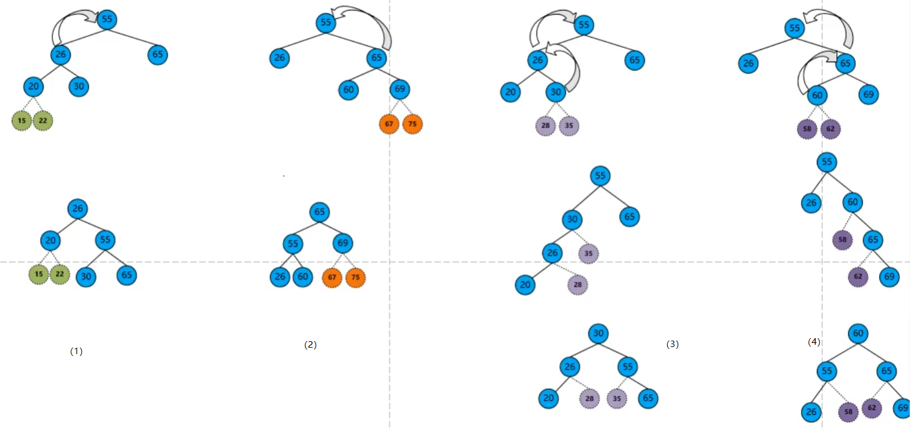

二叉树基础理论与运用
二叉树（Binary tree）是树形结构的一个重要类型。许多实际问题抽象出来的数据结构往往是二叉树形式，即使是一般的树也能简单地转换为二叉树，而且二叉树的存储结构及其算法都较为简单，因此二叉树显得特别重要。二叉树特点是每个结点最多只能有两棵子树，且有左右之分。
二叉树是n个有限元素的集合，该集合或者为空、或者由一个称为根（root）的元素及两个不相交的、被分别称为左子树和右子树的二叉树组成，是有序树。当集合为空时，称该二叉树为空二叉树。在二叉树中，一个元素也称作一个结点 。
树的基本术语
- 结点：包含一个数据元素及若干指向子树分支的信息 。
- 结点的度：一个结点拥有子树的数目称为结点的度。
- 孩子结点：一个结点含有的子树的根结点称为该结点的子结点
- 兄弟结点：具有相同父结点的结点互称为兄弟结点
- 父结点：若一个结点含有子结点，则这个结点称为其子结点的父结点
- 叔叔结点：父结点的兄弟结点
- 叶子结点：也称为终端结点，没有子树的结点或者度为零的结点 。
- 分支结点：也称为非终端结点，度不为零的结点称为非终端结点 。
- 树的度：树中所有结点的度的最大值 。
- 结点的层次：从根结点开始，假设根结点为第1层，根结点的子节点为第2层，依此类推，如果某一个结点位于第L层，则其子节点位于第L+1层 。
- 树的高度：从下而上，节点的高度是该节点到叶子节点的最长路径（边数），树的高度等于根节点的高度
- 节点的深度：从下而上，根节点到这个节点所经历的边的个数
- 有序树：如果树中各棵子树的次序是有先后次序，则称该树为有序树 。
- 无序树：如果树中各棵子树的次序没有先后次序，则称该树为无序树 。
- 森林：由m（m≥0）棵互不相交的树构成一片森林。如果把一棵非空的树的根结点删除，则该树就变成了一片森林，森林中的树由原来根结点的各棵子树构成 。
高度和深度的概念和以下图片原链接：树的高度与深度 - jianglin_liu - 博客园 (cnblogs.com)
二叉树的性质
性质1：二叉树的第i层上至多有2i-1（i≥1）个节点 。
性质2：深度为h的二叉树中至多含有2h-1个节点 。
性质3：若在任意一棵二叉树中，有n0个叶子节点，有n2个度为2的节点，则必有n0=n2+1 。
性质4：具有n个节点的完全二叉树深为log2x+1（其中x表示不大于n的最大整数） 。
性质5：若对一棵有n个节点的完全二叉树进行顺序编号（1≤i≤n），那么，对于编号为i（i≥1）的节点：
当i=1时，该节点为根，它无双亲节点 。
当i>1时，该节点的双亲节点的编号为i/2 。
若2i≤n，则有编号为2i的左节点，否则没有左节点 。
若2i+1≤n，则有编号为2i+1的右节点，否则没有右节点 。
二叉树的基本形态
- 空二叉树：没有节点
- 只有根节点
- 只有左子树
- 只有右子树
- 既有左子树，又有右子树
二叉树的特殊类型
- 满二叉树：如果一棵二叉树只有度为0的结点和度为2的结点，并且度为0的结点在同一层上，则这棵二叉树为满二叉树 。

- 完全二叉树：深度为k，有n个结点的二叉树当且仅当其每一个结点都与深度为k的满二叉树中编号从1到n的结点一一对应时，称为完全二叉树 。完全二叉树的特点是叶子结点只可能出现在层序最大的两层上，并且某个结点的左分支下子孙的最大层序与右分支下子孙的最大层序相等或大1 。

二叉树与森林、树的互相转换
二叉树的存储结构
顺序存储。二叉树的顺序存储，指的是使用顺序表（数组）存储二叉树。需要注意的是，顺序存储只适用于完全二叉树。

链式存储。二叉树并不适合用数组存储，因为并不是每个二叉树都是完全二叉树，普通二叉树使用顺序表存储或多或多会存在空间浪费的现象。一棵普通的二叉树，若将其采用链式存储，则只需从树的根节点开始，将各个节点及其左右孩子使用链表存储即可。

Node的代码：
import java.util.Map;
/**
* 数结点
*/
public class Node<T> {
private T value;
private Node<T> left;//左节点
private Node<T> right;//右结点
private Map parent;
public T getValue() {
return value;
}
public void setValue(T value) {
this.value = value;
}
public Node<T> getLeft() {
return left;
}
public void setLeft(Node<T> left) {
this.left = left;
}
public Node<T> getRight() {
return right;
}
public void setRight(Node<T> right) {
this.right = right;
}
public Map getParent() {
return parent;
}
public void setParent(Map parent) {
this.parent = parent;
}
}
C++版的
/**
* @use: Node节点
**/
class Node{
public:
Node(int data){
this->data = data;
leftNode = NULL;
rightNode = NULL;
}
int data;
// 左子树
Node* leftNode;
// 右子树
Node* rightNode;
};二叉树的遍历

先序遍历（也称为前序遍历）：（简洁：根左右，上面例子的先序遍历的结果为：A->B->D->H->I->E->J->C->F->G，简写为ABDHIEJCFG）
- 访问根节点
- 先序遍历左子树
- 先序遍历右子树
/**
* 先序遍历，根左右
* 以传入的数值为根开始进行先序遍历
*/
public List<Node> leftTraversal(Node node){
binaryTreeList.clear();//将数组清除
return leftTraversalM(node);
}
private List<Node> leftTraversalM(Node node){
if(node!=null){
binaryTreeList.add(node);
leftTraversalM(node.getLeft());
leftTraversalM(node.getRight());
}
return binaryTreeList;
}C++版
/**
* @use: 先序遍历，根左右，以传入的数值为根开始进行先序遍历，使用递归法
* @parameter: 结点
**/
void leftTraversalM(Node* node){
cout << node->data;
if(node->leftNode){
leftTraversalM(node->leftNode);
}
if(node->rightNode){
leftTraversalM(node->rightNode);
}
}中序遍历：（简洁：左根右，上面例子的中序遍历的结果为：H->D->I->B->J->E->A->F->C->G，简写为HDIBJEAFCG）
- 中序遍历左子树
- 访问根节点
- 中序遍历右子树
/**
* 中序遍历，左根右
*/
public List<Node> middleTraversal(Node node){
binaryTreeList.clear();//将数组清除
return middleTraversalM(node);
}
private List<Node> middleTraversalM(Node node){
if(node!=null){
middleTraversalM(node.getLeft());
binaryTreeList.add(node);
middleTraversalM(node.getRight());
}
return binaryTreeList;
}c++
/**
* @use: 中序遍历，左根右，以传入的数值为根开始进行中序遍历，使用递归法
* @parameter: 结点
**/
void middleTraversalM(Node* node){
if(node->leftNode){
middleTraversalM(node->leftNode);
}
cout << node->data;
if(node->rightNode){
middleTraversalM(node->rightNode);
}
}后序遍历：（简洁：左右根，上面例子的后序遍历的结果为：H->I->D->J->E->B->F->G->C->A，简写为HIDJEBFGCA）
- 后序遍历左子树
- 后序遍历右子树
- 访问根节点
/**
* 后序遍历 左右根
*/
public List<Node> afterTraversal(Node node){
binaryTreeList.clear();//将数组清除
return afterTraversalM(node);
}
private List<Node> afterTraversalM(Node node){
if(node!=null){
afterTraversalM(node.getLeft());
afterTraversalM(node.getRight());
binaryTreeList.add(node);
}
return binaryTreeList;
}c++
/**
* @use: 后序遍历，左右根，以传入的数值为根开始进行后序遍历，使用递归法
* @parameter: 结点
**/
void afterTraversalM(Node* node){
if(node->leftNode){
afterTraversalM(node->leftNode);
}
if(node->rightNode){
afterTraversalM(node->rightNode);
}
cout << node->data;
}层次遍历：
按照树的层次自上而下的遍历二叉树。上面例子的层次遍历结果为：A->B->C->D->E->F->G->H->I->J
/**
* 层次遍历 每层的根节点
*/
public List<Node> levelTraversal(Node node){
binaryTreeList.clear();//将数组清除
return levelTraversalM(node);
}
private List<Node> levelTraversalM(Node node){
LinkedList<Node> queue = new LinkedList<Node>();// 新建一个队列
Node current = null;
queue.offer(node);//根节点入队
while(!queue.isEmpty()){
current = queue.poll();//出队队头元素并访问
binaryTreeList.add(current);
if(current.getLeft() != null)//如果当前节点的左节点不为空入队
{
queue.offer(current.getLeft());
}
if(current.getRight() != null)//如果当前节点的右节点不为空，把右节点入队
{
queue.offer(current.getRight());
}
}
return binaryTreeList;
}c++
#include <queue>
/**
* @use: 层次遍历，每层的根节点，以传入的数值为根开始进行后序遍历，使用队列辅助
* @parameter: 结点
**/
void levelTraversalM(Node* node){
queue<Node*> queue;
Node* current = NULL;
// 根节点入队
queue.push(node);
while(!queue.empty()){
// 队头元素并访问
current = queue.front();
// 队头元素出队
queue.pop();
cout << current->data;
// 如果当前节点的左节点不为空入队
if(current->leftNode){
queue.push(current->leftNode);
}
// 如果当前节点的右节点不为空，把右节点入队
if(current->rightNode){
queue.push(current->rightNode);
}
}
}二叉树遍历的优化
使用栈取代递归函数
线索二叉树
采用先序、中序和后序三种方法遍历二又树后都可以得到个线性序列，序列中的每个结点（第一个和最后一个结点除外）都有一个直接前驱和后继。但是，这个线性序列只是逻辑的概念，不是物理结构。
二叉链表体现的是父子关系，不一定是结点在遍历序列中的前驱和后继。
在含有n个结点的二叉链表中，有n+1个空指针，能否利用这些空指针来存放前驱和后继结点的地址？然后像遍历链表一样方便的遍历二叉树的序列？
线索二又树可以部分解決上述问题，加快在序列中查找前驱和后继结点的速度，但增加了在树中插入和删除结点的难度。
二叉树线索化是将二叉链表中的空指针改为指向前驱或后继结点。而前驱或后继结点的信息只有遍历时才能得到，所以二叉树的线索化分为先序线索二叉树、中序线索二又树和后序线索二又树。
- 如果该结点没有左子结点（左子树），则将左指针指向遍历序列中它的前驱结点。
- 如果该结点没有右子结点（右子树），则将右指针指向遍历序列中它的后继结点。
后序线索二叉树对查找指定结点在该次序下的后序效率较差，对二叉树进行后序线索化后，寻找指定结点的后序下的后序结点比较麻烦。因为它首先要找到这个结点的父节点，再到其父节点的右子树中找后序下的第一个结点。
二叉排序树（Binary Sort Tree，缩写为BST）
一棵空树，或者是具有下列性质的二叉树：
（1）若左子树不空，则左子树上所有结点的值均小于它的根结点的值；
（2）若右子树不空，则右子树上所有结点的值均大于它的根结点的值；
（3）左、右子树也分别为二叉排序树；
（4）没有键值相等的结点。
输出二叉排序树的中序遍历序列，则这个序列是非递减（非递增）有序的，若不做说明，排序二叉树节点关键字按左小右大分布。折半查找法的判定树是一个二叉排序树，以下为插入二叉排序树的代码
private Node root;//根节点
public void setRoot(Node root) {
this.root = root;
}
/**
* 二叉排序树
* 排序式添加结点，比根大的放右边，比根小的放左边
*/
public void sortAdd(Node node) {
isBST = true;
Map parent = new HashMap();
if(root==null){
// System.out.println(node.getValue()+" set root");
setRoot(node);
parent = null;
node.setParent(parent);
}else{
if(node.getValue().hashCode() < root.getValue().hashCode()){
//该节点的值比根小，搜索左子树
if(root.getLeft()!=null){
Node root = this.root;
setRoot(root.getLeft());
// System.out.println(this.root.getValue()+" go left");
sortAdd(node);
setRoot(root);
}else{
// System.out.println(node.getValue()+" set left");
root.setLeft(node);
parent.put(0,root);
node.setParent(parent);
}
}else if(node.getValue().hashCode() > root.getValue().hashCode()){
//该节点的值比根大，搜索右子树
if(root.getRight()!=null){
Node root = this.root;
setRoot(root.getRight());
// System.out.println(this.root.getValue()+" go right");
sortAdd(node);
setRoot(root);
}else{
// System.out.println(node.getValue()+" set right");
root.setRight(node);
parent.put(1,root);
node.setParent(parent);
}
}
}
}关于如何删除二叉排序树的结点：
- 如果树只有根结点，并且待删除的结点就是根结点
- 如果待删除的结点是叶结点，直接删除，不会破坏二又排序树的性质。
- 如果待删除的结点只有左子树或右子树，则让子树代替自己。
- 如果待除的结点有左子树和右子树，让左子树最右侧的结点代替自己，然后删除左子树最右侧的结点。（也可以让石子树最左侧的结点代替自己，然后除石子树最左侧的结点。）
/**
* 二叉排序树
* 删除节点，并且删除节点后保持二叉排序树的性质
* 若不是二叉排序树，不会删除任何节点
* 若不存在结点，不删除任何节点
*/
public void sortDel(Node node){
Node current = search(node);
if(isBST == false){
System.out.println("This tree is not BST(Binary Sort Tree)");
}else if(current != null && isBST == true){
/* 如果树只有根结点，并且待删除的结点就是根结点 */
if(root.getValue().hashCode() == current.getValue().hashCode() && root.getRight() == null && root.getLeft() == null){
System.out.println("This tree only has a root node,this node is root,so delete it");
root = null;
current = null;
}
/* 如果待删除的结点是叶结点，直接删除，不会破坏二又排序树的性质 */
if(root.getValue().hashCode() != current.getValue().hashCode() && root.getRight() == null && root.getLeft() == null){
System.out.println("This node is leaf node,delete it");
Map<Integer,Node> parentmap = getParentMap(current);
if(parentmap.get(0)!= null){
parentmap.get(0).setLeft(null);
}else{
parentmap.get(1).setRight(null);
}
}
/* 如果待删除的结点只有左子树或右子树，则让子树代替自己。 */
if(current.getLeft()!= null && current.getRight() == null){
System.out.println("This node only have left tree,delete this node and replace with left tree");
Map<Integer,Node> parentmap = getParentMap(current);
if(parentmap.get(0)!= null){
parentmap.get(0).setLeft(current.getLeft());
}else{
parentmap.get(1).setRight(current.getLeft());
}
}
if(current.getLeft()== null && current.getRight() != null){
System.out.println("This node only have right tree,delete this node and replace with right tree");
Map<Integer,Node> parentmap = getParentMap(current);
if(parentmap.get(0)!= null){
parentmap.get(0).setLeft(current.getRight());
}else{
parentmap.get(1).setRight(current.getRight());
}
}
/* 如果待除的结点有左子树和右子树，让左子树最右侧的结点代替自己，然后删除左子树最右侧的结点。
（也可以让石子树最左侧的结点代替自己，然后除石子树最左侧的结点。）*/
if(current.getLeft()!= null && current.getRight() != null){
System.out.println("This node both have left and right tree,delete this node and replace with right tree");
Map<Integer,Node> parentmap = getParentMap(current);
if(parentmap.get(0)!= null){
parentmap.get(0).setLeft(current.getRight());
current.getRight().setLeft(current.getLeft());
}else{
parentmap.get(1).setRight(current.getRight());
current.getRight().setLeft(current.getLeft());
}
}
}else{
System.out.println("Can not find this node in the tree,cant delete this node");
}
}如果二又排序树高为h,最下层结点的查找长度为h,查找操作的时间复杂度为O(h)
具有n个(n>0)结点的二叉树的最小高度为log_2(n+1)或log_2n+1。最大高度为n
最好的情况：平均查找长度=O(log_2n)
最坏的情况：平均查找长度=O(n)
平衡二叉树(Balanced Binary Tree)
简称平衡树(AVLG. MAdelson-velsky、E.M. Landis),是一种特殊的二叉排序树。它实现了较高的查找效率，发现树越矮查找效率越高，进而发明了平衡二叉树。树上任意结点的左子树和右子树的深度之差不超过1
结点的平衡因子=左子树的高度-右子树的高度
在二叉排序树中插入和删除结点后，只需要调整最小不平衡子树，整棵树将恢复平衡。
最小平衡子树有四种情况（LL，RR，LR，RL）：
- LL：左左更高，整棵树向右旋转（右单旋转调整），左子树变为根，左子树的右子树放到右子树的左边。
- RR：右右更高，整棵树向左旋转（左单旋转调整），右子树变为根，右子树的左子树放到左子树的右边。
- LR：左右更高，左子树先向左旋转，后将整棵树向右旋转（先左后右双旋转调整）
- RL：右左更高，右子树先向右旋转，后将整棵树向左旋转（先右后左双旋转调整）

赫夫曼树
当用 n 个结点（都做叶子结点且都有各自的权值）试图构建一棵树时，如果构建的这棵树的带权路径长度最小，称这棵树为“最优二叉树”，有时也叫“赫夫曼树”或者“哈夫曼树”。
在构建哈弗曼树时，要使树的带权路径长度最小，只需要遵循一个原则，那就是：权重越大的结点离树根越近。在图 1 中，因为结点 a 的权值最大，所以理应直接作为根结点的孩子结点。
赫夫曼树的几个相关名词：
路径：在一棵树中，一个结点到另一个结点之间的通路，称为路径。图 1 中，从根结点到结点 a 之间的通路就是一条路径。
路径长度：在一条路径中，每经过一个结点，路径长度都要加 1 。例如在一棵树中，规定根结点所在层数为1层，那么从根结点到第 i 层结点的路径长度为 i - 1 。图 1 中从根结点到结点 c 的路径长度为 3。
结点的权：给每一个结点赋予一个新的数值，被称为这个结点的权。例如，图 1 中结点 a 的权为 7，结点 b 的权为 5。
结点的带权路径长度：指的是从根结点到该结点之间的路径长度与该结点的权的乘积。例如，图 1 中结点 b 的带权路径长度为 2 * 5 = 10 。
树的带权路径长度为树中所有叶子结点的带权路径长度之和。通常记作 “WPL” 。
构建哈夫曼树的过程：
对于给定的有各自权值的 n 个结点，构建哈夫曼树有一个行之有效的办法：
- 在 n 个权值中选出两个最小的权值，对应的两个结点组成一个新的二叉树，且新二叉树的根结点的权值为左右孩子权值的和；
- 在原有的 n 个权值中删除那两个最小的权值，同时将新的权值加入到 n–2 个权值的行列中，以此类推；
- 重复 1 和 2 ，直到所以的结点构建成了一棵二叉树为止，这棵树就是哈夫曼树。
哈夫曼编码
可变长度编码，任何个字符的编码都不是另一个字符的编码的前缀，这种编码称做前缀编码。利用哈夫曼树来设计前缀编码，用0和1表示左子树或右子树。
红黑树
红黑树（Red Black Tree） 是一种自平衡二叉查找树，是在计算机科学中用到的一种数据结构，典型的用途是实现关联数组。
红黑树是在1972年由Rudolf Bayer发明的，当时被称为平衡二叉B树（symmetric binary B-trees）。后来，在1978年被 Leo J. Guibas 和 Robert Sedgewick 修改为如今的“红黑树”。
红黑树是一种特化的AVL树（平衡二叉树），都是在进行插入和删除操作时通过特定操作保持二叉查找树的平衡，从而获得较高的查找性能。
它虽然是复杂的，但它的最坏情况运行时间也是非常良好的，并且在实践中是高效的： 它可以在O(log n)时间内做查找，插入和删除，这里的n 是树中元素的数目。

性质
- 结点是红色或者黑色
- 根结点是黑色
- 叶结点是不存储数据的黑色空结点（NULL结点）
- 每个红色结点必须有两个黑色的子结点
- 任意结点到其可到达的叶结点间包含相同数量的黑色结点
根黑叶黑，黑红相间，不能连续两个红，必须相同的黑
常见操作
变色：节点的颜色由黑变红或者由红变黑
左旋右旋：参考平衡二叉树
插入结点后平衡与变色的几种情况
插入结点时，该结点默认为红色
根结点为空
插入到根结点后，颜色变成黑色
父亲与叔叔结点皆为红色
将父亲与叔叔结点变成黑色，父亲与叔叔结点的父结点变为红色
叔叔结点为黑色，插入的结点在左子树且祖先结点为黑色
结点与父亲结点交换，祖先结点插入在结点的左子树，颜色变成红色，结点变成黑色
叔叔结点为黑色，插入的结点在右子树且祖先结点为黑色
祖先结点左旋/右旋，旋转后的根结点变黑色，旋转后的左/右结点变成红色
红黑树与平衡二叉树的区别
- 红黑树放弃了追求完全平衡，追求大致平衡，在与平衡二叉树的时间复杂度相差不大的情况下，保证每次插入最多只需要三次旋转就能达到平衡，实现起来也更为简单。
- 平衡二叉树追求绝对平衡，条件比较苛刻，实现起来比较麻烦，每次插入新节点之后需要旋转的次数不能预知。
- 红黑树和AVL树的区别在于它使用颜色来标识结点的高度，它所追求的是局部平衡而不是AVL树中的非常严格的平衡。
- 红黑树是牺牲了严格的高度平衡的优越条件为代价让红黑树能够以O(log2 n)的时间复杂度进行搜索、插入、删除操作。
- 红黑树的算法时间复杂度和AVL相同，但统计性能比AVL树更高.
若增删操作频繁用红黑树（统计性能高），增删操作少用平衡二叉树（查询效率高）
本博客所有文章除特别声明外，均采用 CC BY-SA 4.0 协议 ，转载请注明出处！